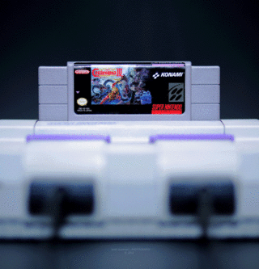
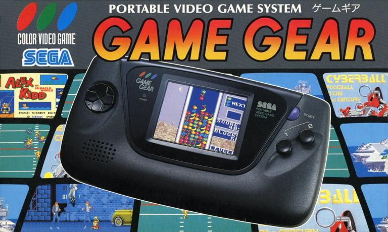
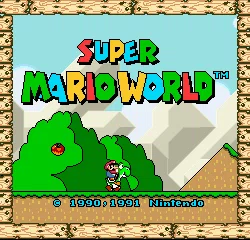
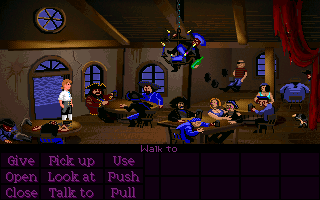

>
Este es el año en el que sale a la venta una de las consolas que más ha triunfado
en la historia de Nintendo: La Super Famicom o Super NES. Sin duda, lo que la hizo
triunfar más fueron los juegos que llegarían durante sus largos años de vida.
Dentro del catálogo de Super Famicom nos podemos encontrar con juegos como Super Mario World,
Super Mario Kart, The Legend of Zelda: A Link to the Past, Super Metroid, Starfox, o Donkey Kong Country entre otros.
<

>
También llega Game Gear, Sega decide sacar la alternativa a la Game Boy de Nintendo,
su propia consola portátil, con excelente calidad tecnica que a la vez implicaba su
mayor problema, la escasa duración de su batería. A parte de todo esto, la consola de Sega
era bastante más grande que la de Nintendo y la hacía poco "portátil".
<

>
Sale a la venta Super Mario World. El nuevo juego de Mario presentaba una gran mejoría en gráficos, sonido y jugabilidad respecto a sus antecesores. Además apareció un nuevo personaje
(Yoshi) y nuevas habilidades para Mario, incluyendo la famosa capa. Hay que
decir que fue de los primeros juegos que compensaba al jugador al completarlo al 100% (descubrir todos los secretos).
Se lanza en Japón en 1990, en Estados Unidos en el 1991 y al año siguiente en Europa.
Fue un completo éxito en todo el mundo y es considerado uno de los mejores
juegos de la historia.
<

>
Se publica The Secret of Monkey Island, obra cumbre de las aventuras gráficas.
Narraba las aventuras de Guybrush Threepwood, un joven que llegaba
a la isla Meleé con la intención de convertirse en un fiero pirata.
Al final tendrá que viajar a la mítica Monkey Island para salvar a su amada de las
garras de LeChuk.
<